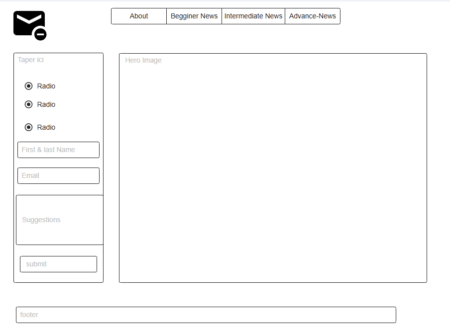
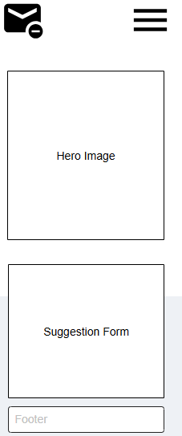

This is a news website where users
who english is not their first language are
introduce to begginer, intermediate, and advanced
news to help them learn english and build their critical ability.
Q1: I just started off to learning english, Where can i find a friendly begginer news so I can practice english?
Q2: I have an intermediate english level, What is the best news website where I can practi my reading and vocabulary skills?
heading and footer: --primary-color: #003F88;
background color: --secondary-coloor: #00509D;
--accent1-color: #0077B6;
--accent2-color: #FEFCFB;
--accent3-color: #FDC500;
--nav-background-color: #00296B;
--nav-link-color: #FEFCFB;
--nav-hover-link-color: #001F54;
--nav-hover-background-color: #FEFCFB;
--heading-font: Bree Serif, serif; --paragraph-font: serif;
 